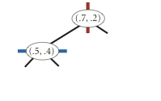
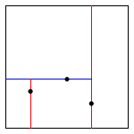
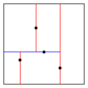
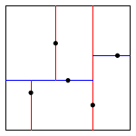

Geometric primitives.
To get started, use the following geometric primitives for points and
axis-aligned rectangles in the plane.
algs4.jar) represents points in the plane.
Here is the subset of its API that you may use:
public class Point2D implements Comparable<Point2D> {
public Point2D(double x, double y) // construct the point (x, y)
public double x() // x-coordinate
public double y() // y-coordinate
public double distanceTo(Point2D that) // Euclidean distance between two points
public double distanceSquaredTo(Point2D that) // square of Euclidean distance between two points
public int compareTo(Point2D that) // for use in an ordered symbol table
public boolean equals(Object that) // does this point equal that object?
public void draw() // draw to standard draw
public String toString() // string representation
}
algs4.jar)
represents axis-aligned rectangles.
Here is the subset of its API that you may use:
public class RectHV {
public RectHV(double xmin, double ymin, // construct the rectangle [xmin, xmax] x [ymin, ymax]
double xmax, double ymax) // throw an IllegalArgumentException if (xmin > xmax) or (ymin > ymax)
public double xmin() // minimum x-coordinate of rectangle
public double ymin() // minimum y-coordinate of rectangle
public double xmax() // maximum x-coordinate of rectangle
public double ymax() // maximum y-coordinate of rectangle
public boolean contains(Point2D p) // does this rectangle contain the point p (either inside or on boundary)?
public boolean intersects(RectHV that) // does this rectangle intersect that rectangle (at one or more points)?
public double distanceTo(Point2D p) // Euclidean distance from point p to closest point in rectangle
public double distanceSquaredTo(Point2D p) // square of Euclidean distance from point p to closest point in rectangle
public boolean equals(Object that) // does this rectangle equal that object?
public void draw() // draw to standard draw
public String toString() // string representation
}
Brute-force implementation.
Write a mutable data type PointSET.java that represents a set of
points in the unit square.
Implement the following API by using a red–black BST:
public class PointSET {
public PointSET() // construct an empty set of points
public boolean isEmpty() // is the set empty?
public int size() // number of points in the set
public void insert(Point2D p) // add the point to the set (if it is not already in the set)
public boolean contains(Point2D p) // does the set contain point p?
public void draw() // draw all points to standard draw
public Iterable<Point2D> range(RectHV rect) // all points that are inside the rectangle (or on the boundary)
public Point2D nearest(Point2D p) // a nearest neighbor in the set to point p; null if the set is empty
public static void main(String[] args) // unit testing of the methods (optional)
}
Implementation requirements.
You must use either
SET or
java.util.TreeSet;
do not implement your own red–black BST.
Corner cases.
Throw an IllegalArgumentException if any argument is null.
Performance requirements.
Your implementation should support insert() and contains() in time
proportional to the logarithm of the number of points in the set in the worst case; it should support
nearest() and range() in time proportional to the number of points in the set.
2d-tree implementation.
Write a mutable data type KdTree.java that uses a 2d-tree to
implement the same API (but replace PointSET with KdTree).
A 2d-tree is a generalization of a BST to two-dimensional keys.
The idea is to build a BST with points in the nodes,
using the x- and y-coordinates of the points
as keys in strictly alternating sequence.

insert (0.7, 0.2)  insert (0.5, 0.4) 
insert (0.2, 0.3) 
insert (0.4, 0.7) 
insert (0.9, 0.6)   
draw() method should draw all of the points to standard draw
in black and the subdivisions in red (for vertical splits) and blue (for
horizontal splits).
This method need not be efficient—it is primarily for debugging.
The prime advantage of a 2d-tree over a BST is that it supports efficient implementation of range search and nearest-neighbor search. Each node corresponds to an axis-aligned rectangle in the unit square, which encloses all of the points in its subtree. The root corresponds to the unit square; the left and right children of the root corresponds to the two rectangles split by the x-coordinate of the point at the root; and so forth.
Clients. You may use the following interactive client programs to test and debug your code.
Analysis of running time and memory usage (optional and not graded).
Web submission.
Submit a .zip file containing only
PointSET.java and KdTree.java.
We will supply algs4.jar.
Your may not call library functions except those in
those in java.lang, java.util, and algs4.jar.